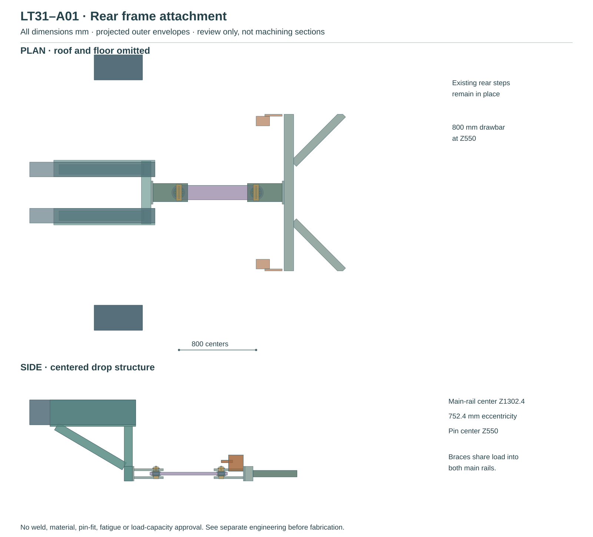
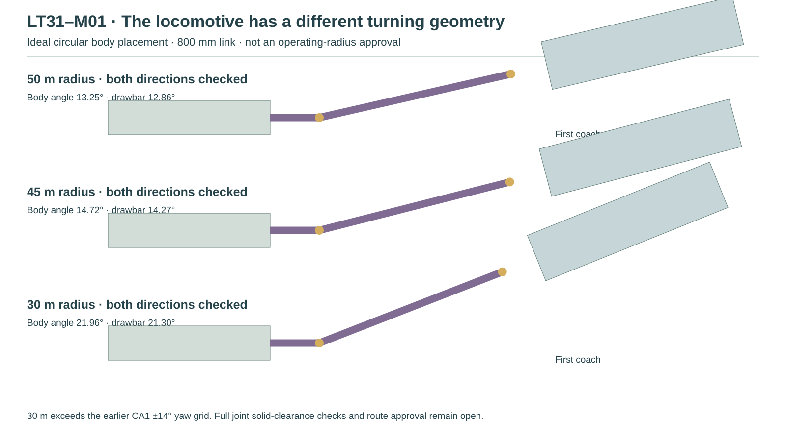
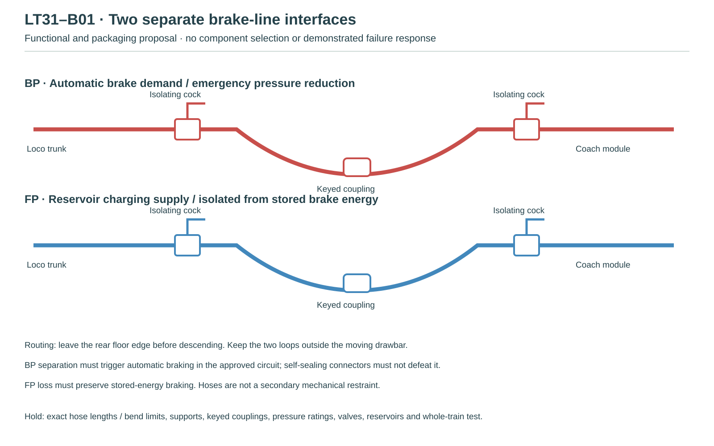

LT31 · LOCOMOTIVE TO FIRST COACH
The missing connection, brought into the model.
An 800 mm articulated drawbar links the locomotive to the first regular coach. The new rear mounting structure carries the proposed connection down from the locomotive rails to the coach’s 550 mm coupling height. Stored coach stairs, locomotive rear steps and two brake-line jumpers are shown together.
Geometry developed; engineering acceptance remains open. The frame mount, pin arrangement and piping are proposed interfaces. This is not a complete or approved train layout.
What connects to what
| Item | Modeled arrangement |
|---|---|
| Primary load path | Coach frame → retained CA1 joint → drawbar → locomotive clevis/backplate → lower crosshead → twin drops and diagonal braces → both main rails. |
| Turning | Pin centers stay 800 mm apart. Spherical joint profiles and positive pin caps are inherited CA1 review geometry. The locomotive’s long overhang requires its own curve placement. |
| Rear steps | Existing steps are retained at Y±1170…1430 mm. The new drawgear stays centrally beneath the cab; no stair clearance is assumed from the coach-to-coach study. |
| Brake connection | Separate BP and FP routes continue from the existing locomotive rear lines to isolating cocks, flexible jumpers and first-coach interface tails. Couplings, hose supports and final coach control-module ports remain supplier interfaces. |
Review drawings



Download rear-mount candidate STEP (.gz) → · Read the evidence and remaining decisions →